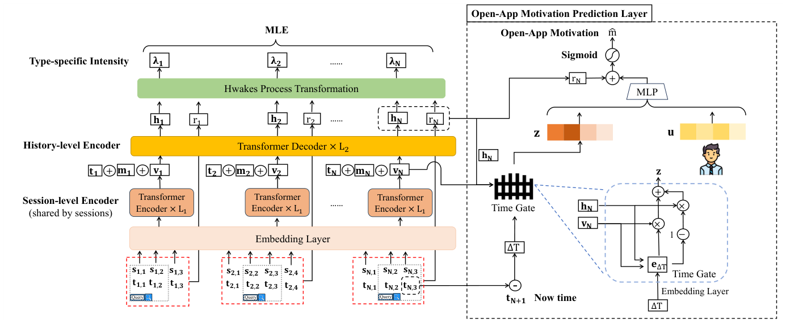

To Search or to Recommend: Predicting Open-App Motivation with Neural Hawkes Process (搜索还是推荐：用神经 Hawkes 过程预测用户开屏动机)
- 会议/期刊: SIGIR 2024
- 作者与机构: Zhongxiang Sun, Zihua Si, Xiao Zhang, Hongteng Xu, Jun Xu (中国人民大学高瓴人工智能学院)；Xiaoxue Zang, Yang Song (快手科技)
- 推荐链路定位: 召回前置的用户表征 / 开屏场景分发（搜索 vs. 推荐入口）
- 研究方向: 协同过滤与双塔召回 / 序列与会话推荐
- 论文原文: https://arxiv.org/abs/2404.03267v1
- 开源代码: https://github.com/Jeryi-Sun/NHP_OAM
TL;DR (1分钟核心速览)
搜索+推荐双入口 App 中，"用户此次开屏是为了搜还是为了刷"这一动机预测此前无人系统研究，而它对入口调权与开屏广告/弹窗推荐至关重要。本文提出 NHP-OAM：用层级 Transformer 编码会话内 query/点击序列与会话间动机序列，再用带「搜索比感知项」的类型特异强度函数建模不规则到达时间，最后用时间门融合长短期意图与用户 ID 输出动机概率。在自建 OAMD 与扩展 ZhihuRec 上，F0.5 达 0.8284 / 0.5950，相对最强 NHP 基线提升 2.9% / 1.4%，AUC 提升 2.8% / 4.0%。
Background & Motivation (背景与核心矛盾)
- 主流范式: 相关工作分为 User Retention Prediction（预测"是否再来"）与 User Intent Prediction（预测"进来后想干什么"），均未刻画"开屏那一刻的入口级动机"。
- 前人局限: ① 留存预测只做二值回访，粒度太粗，无法区分搜索/推荐；② 序列推荐与时间感知序列模型（TiSASRec/RESETBERT4Rec）假定等间隔采样、只能吃单一模态历史，无法处理"开屏时刻不规则 + query 与 item 异质混排"。
- 核心洞察 (Key Insight): 在 OAMD 上统计出三条行为规律——周期性（搜索/推荐比呈 24 小时与工作日-周末双周期，周末与午晚高峰偏向搜索）、重复查询（越活跃用户重复 query 比例越高）、相关性（上一会话 search-click/rec-click 比值与下次开屏搜索动机正相关，Spearman/Kendall/Pearson/D 系数一致为正）。
- 本文切入点: 用 Hawkes 过程天然适配的不规则事件到达建模周期性，用层级 Transformer 吃掉多因素（query、item、动机），并把"搜索比"直接写进强度函数。
Method (核心方法设计)
1. 整体框架 (Overall Architecture)
输入是用户按时间排序的 \(N\)个会话，每个会话为 query 动作与 item 点击混排的异质序列，并附带开屏时刻\(t_n\)与该次开屏动机标签\(m_n\in\{0,1\}\)。先由会话级 Transformer Encoder 将会话内行为压成会话向量\(\boldsymbol{v}_n\)；再把\([\boldsymbol{v}_n+\boldsymbol{e}_{m,n}+\boldsymbol{e}_{t,n}]\)序列送入历史级 Transformer Decoder（因果掩码防泄漏）得到历史隐状态\(\mathbf{H}\)，用于计算类型特异强度函数并做 Hawkes 似然训练；同时取\(t_N\)时刻的最后隐状态\(\boldsymbol{h}(t_N)\)（长期意图）与末会话向量\(\boldsymbol{v}_N\)（短期意图）经时间门融合，拼上用户 embedding 过两层 MLP，输出下一次开屏动机概率；训练完成后\(\boldsymbol{z}\) 可直接作为下游召回侧的用户表征注入双塔。
flowchart TD
A["会话内异质序列 (query/item + 时间 + 类型)"] --> B["Session-level Transformer Encoder → v_n"]
B --> C["会话序列 [v_n + m_n + t_n]"]
C --> D["History-level Transformer Decoder → H, h(t_N)"]
D --> E["类型特异强度函数 λ_m(t)"]
D --> F["时间门融合 v_N 与 h(t_N) → z"]
F --> G["MLP(z‖u)+r_N → Sigmoid → 动机预测"]
E --> H["Hawkes MLE 损失"]
2. 关键设计拆解 (Key Designs)
-
层级 Transformer 历史编码器（解决"多因素 + 不规则到达"）：前人 NHP 只吃单一事件序列，无法处理 query 与点击混排。本文先会话内编码再会话间解码，使会话向量 \(\boldsymbol{v}_n=\mathrm{MEAN}(\mathrm{Encoder}(\mathbf{E}_n))\)承担短期意图、\(\boldsymbol{h}(t_N)\)承担长期意图；因 Decoder 只可见前序会话，强度函数所需的\(\mathcal{T}_t\) 天然无穿越。
-
搜索比感知的类型特异强度函数（把统计规律直接写成先验）：经典 NHP 强度只依赖隐状态与时间衰减，无法体现"上次会话搜得多则这次更可能搜"。本文在强度中加入批归一化后的搜索/推荐交互比 \(r_{t,m}\)：
其中 \(f=\mathrm{softplus}\)保证正值、\(\phi\)为 GELU/Tanh、\(\alpha_m\)控制线性插值衰减。直觉是：周期性与重复查询被"时间项 + 历史项"共同吸收，相关性被\(r_{t,m}\) 显式注入，三者互补而非互相竞争。
- 时间门融合与联合训练目标：用户开屏间隔 \(\Delta t=t_{N+1}-t_{N,\lvert S_N\rvert}\)编码后作为门控信号\(\boldsymbol{g}=\sigma(\mathbf{W}_l\boldsymbol{h}(t_N)+\mathbf{W}_s\boldsymbol{v}_N+\boldsymbol{e}_{\Delta t})\)，\(\boldsymbol{z}=\boldsymbol{g}\otimes\boldsymbol{v}_N+(1-\boldsymbol{g})\otimes\boldsymbol{h}(t_N)\)，预测\(\hat{m}_{N+1}=\sigma(\mathrm{MLP}(\boldsymbol{z}\Vert\boldsymbol{u})+r_N)\)。总损失为 Hawkes 对数似然（第二项用 Monte Carlo 近似积分）与 BCE 的加权和\(\mathcal{L}=\sum_{u}(-\alpha\mathcal{L}^u_{\lambda}+\mathcal{L}^u_m)\)，免负采样、按用户全历史一次性优化，推理仅需一次前向。
Experimental Setup & Evaluation Protocol (实验设置与评估协议)
- 数据集与预处理: 自建工业数据集 OAMD（标签定义：开屏 30 秒内发生主动搜索即为 search，否则 recommendation）与扩展的公开 ZhihuRec（以 30 分钟静默切会话，并打上同样口径的动机标签）：
| 数据集 | #Users | #Sessions/用户 | #交互/用户 (R-C, Q, Q-C) | 时间跨度 | 类别分布 (Search : Rec) |
|---|---|---|---|---|---|
| OAMD | 25,355 | 20.31 | 285.73 / 17.51 / 22.64 | 16 天 | 66,546 : 340,842（强不平衡） |
| ZhihuRec (扩展) | 798,086 | 5.27 | 33.81 / 4.89 / — | 10 天 | 715,792 : 3,314,396 |
- 数据划分与防穿越 (Splitting Strategy): 时间比例切分——前 3 天作历史集（保证用户画像充分），倒数第 1 天为测试集、倒数第 2 天为验证集，其余训练；ZhihuRec 需先删去原采集末日以避免大量行为塌缩到测试集造成分布漂移。
- 排名/分类评测协议: 属二分类任务而非全库排序，报告 Accuracy、Precision、F1、F0.5（因误判"搜索动机"体验代价高，偏重 precision）与 AUC；阈值在验证集上按最优 F0.5 以 0.01 步长从 \((0,1)\) 搜索后固定用于测试集。
- 对比基线与超参: 5 类共 13 个基线——SR（GRU4Rec/SASRec/BERT4Rec）、联合搜索-推荐（NRHUB/Query-SeqRec/USER）、时间感知 SR（TiSASRec/RESETBERT4Rec/TLSRec）、时序预测（LSTNet/Autoformer/DLinear）、NHP（CTNHP/SAHP/THP）。\(d=32\)，\(L_1=L_2=2\)，batch\(\in\{64,128,256\}\)，lr\(\in\{10^{-5},10^{-4},10^{-3}\}\)，\(\alpha\)五档网格搜索；显著性用\(t\)-test (\(p<0.05\))。
Key Experimental Results (实验关键数据)
1. 主实验对比 (Main Results)
| 类别 | 模型 | OAMD Acc | OAMD Prec | OAMD F0.5 | OAMD AUC | ZhihuRec F0.5 | ZhihuRec AUC |
|---|---|---|---|---|---|---|---|
| SR | SASRec | 0.9193 | 0.8156 | 0.6472 | 0.7162 | 0.5399 | 0.6611 |
| SR | GRU4Rec | 0.9228 | 0.8789 | 0.6778 | 0.7181 | 0.5814 | 0.6827 |
| SRS | USER | 0.9103 | 0.7304 | 0.5591 | 0.7986 | 0.5821 | 0.7254 |
| TS | LSTNet | 0.9226 | 0.7973 | 0.6688 | 0.8352 | 0.5248 | 0.7003 |
| TSR | RESETBERT4Rec | 0.9159 | 0.7429 | 0.6109 | 0.8117 | 0.5866 | 0.6937 |
| NHP | CTNHP | 0.9409 | 0.8883 | 0.7974 | 0.9017 | 0.5295 | 0.7085 |
| NHP | THP | 0.9393 | 0.9019 | 0.8050 | 0.9063 | 0.5292 | 0.7064 |
| NHP | SAHP | 0.9409 | 0.9014 | 0.7885 | 0.9076 | 0.5289 | 0.7064 |
| NHP | NHP-OAM | 0.9463 | 0.9320 | 0.8284 | 0.9326 | 0.5950 | 0.7541 |
| — | Improv. | +0.6% | +3.3% | +2.9% | +2.8% | +1.4% | +4.0% |
2. 消融实验 (Ablation Study)
| 变体 | F0.5 | AUC | ΔF0.5 |
|---|---|---|---|
| w/o HP（Hawkes 换 LSTM） | 0.7623 | 0.9212 | −7.97% |
| w/o SLE（去会话级编码器） | 0.8002 | 0.9144 | −3.40% |
| w/o PL（去预测层） | 0.8005 | 0.9289 | −3.37% |
| w/o TG（去时间门） | 0.8039 | 0.9307 | −2.96% |
| w/o QR（去搜索比感知项） | 0.8137 | 0.9302 | −1.77% |
| w/o UE（去用户 ID） | 0.8177 | 0.9323 | −1.29% |
| NHP-OAM (full) | 0.8284 | 0.9326 | — |
3. 关键实验发现 (Key Findings)
- 点过程骨架是性能分水岭：三类 NHP 基线在 OAMD 的 AUC 全部 \(\ge 0.90\)，远超 SR/TS 类的 0.72–0.84，因为不规则到达时间才是周期性的载体；而把 Hawkes 替换为 LSTM（w/o HP）直接掉 7.97 个点，是所有消融中最深的坑，说明"能建模时间 ≠ 能利用强度"。OAMD 会话数从 0 增到 10 时 F0.5 从 0.6465 单调升至 0.8284 后饱和，印证点过程对序列长度的依赖。
- 搜索比 \(r_N\) 是廉价的强先验：仅移除 QR 就损失 1.77%，且 w/o QR 的 Precision (0.9153) 明显低于 full (0.9320)，说明统计上 0.4082 vs 0.0474 的点击比差异被强度函数与预测层双重吸收，替代了昂贵的行为注意力。层级编码器（w/o SLE −3.40%）与预测层（w/o PL −3.37%）贡献次之，验证"会话内上下文 + 时间门"不可省略。
- 下游增益可迁移：把 \(\boldsymbol{z}\)注入 SASRec/GRU4Rec/DIN 与 NRHUB/USER 后，AUC/GAUC 全部正向提升（稀疏基线 GRU4Rec 提升最显著）；在只有单次曝光机会的开屏广告/弹窗推荐场景同样显著，说明\(\boldsymbol{z}\) 捕捉的是"开屏瞬时兴趣"，而非普通长期偏好。扩展的 ZhihuRec 指标整体更低（F0.5 0.5950），原因是其会话由 30 分钟规则人工切分、且缺失 Q-C 特征。
Highlights & Limitations (亮点、对比与审稿批判)
- 与代表作对比 (vs. Prior Work): 与 THP/SAHP 相比，本文不再把强度函数当作纯时间隐变量模型，而是把 session 内异质行为与会话间动机做层级分离，并将统计量 \(r_{t,m}\) 显式注入 CIF；与 USER、Query-SeqRec 等联合搜索-推荐序列模型相比，本文多了一条"事件到达时间"的建模通道，避免了等间隔假设；与留存/意图预测相比，粒度从"是否回来/想买什么"收敛到"开屏走哪个入口"。
- 可迁移亮点: ① 把领域统计量（如搜索比、位置比）作为可直接解释的加性项塞进强度函数或 logit，几乎零成本且可解释；② 用 \(\Delta t\) 相对时间编码构造门控，融合长短期表征，可平移到多场景兴趣融合。
- 审稿级局限批判: ① 标签口径依赖"30 秒内主动搜索"这一人工阈值，无独立人工标注校验，跨 App 迁移时阈值需重新校准；② 强度函数中的 \(r_{t,m}\)与预测层的\(r_N\)重复使用同一统计量，存在信息冗余与超参\(\alpha_m\)敏感风险，文中却未给出\(\alpha_m\) 敏感性曲线；③ 仅有离线实验，缺乏入口调权带来的留存/时长类线上 A/B 结果，商业价值证据仍偏间接；④ OAMD 仅 16 天、25K 用户，周周期性结论的统计稳定性有限。
Rating (四维评分)
- 方法创新性 (Novelty): ⭐⭐⭐⭐ （把 NHP 从"单序列事件预测"改造为"异质会话 + 开屏动机"层级结构，强度函数注入统计比是清晰增量，理论深度偏工程化但问题定义新颖）
- 评估协议与实验扎实度 (Protocol & Experiments): ⭐⭐⭐⭐ （自建工业数据集 + 扩展公开数据集双验证，13 个跨 5 类基线、\(t\) 检验与 6 组消融齐备；扣分在阈值调优依赖验证集 F0.5 且无线上实验）
- 写作与数学规范度 (Clarity & Rigor): ⭐⭐⭐⭐ （任务定义、强度函数与损失推导完整，符号统一；\(\alpha\) 与 BN 细节在正文中被省略，复现需查代码）
- 工业落地与复现价值 (Industrial & Practical Value): ⭐⭐⭐⭐⭐ （代码与 OAMD 已开源，推理仅一次前向、\(d=32\) 极轻量，直接服务开屏广告与弹窗推荐这类单次曝光场景）